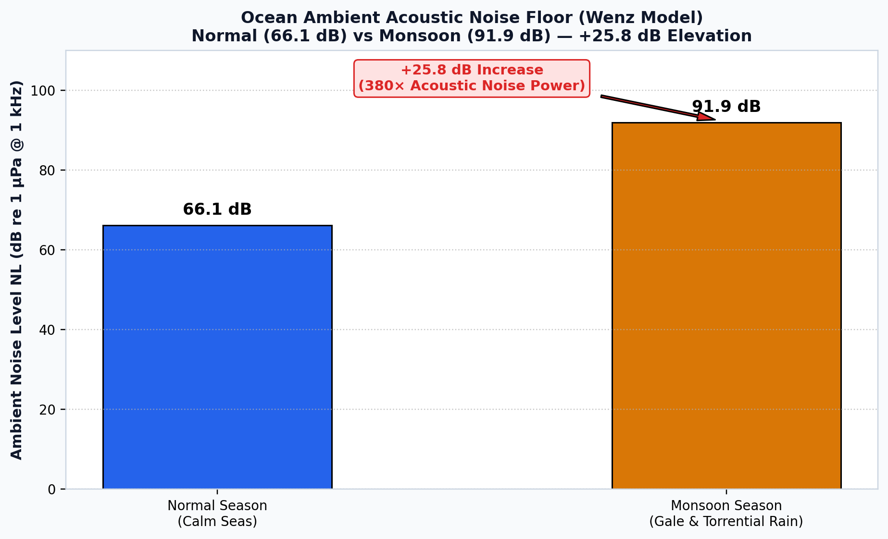
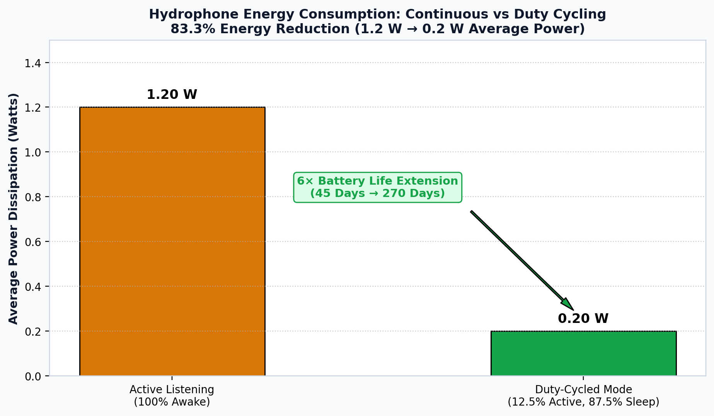
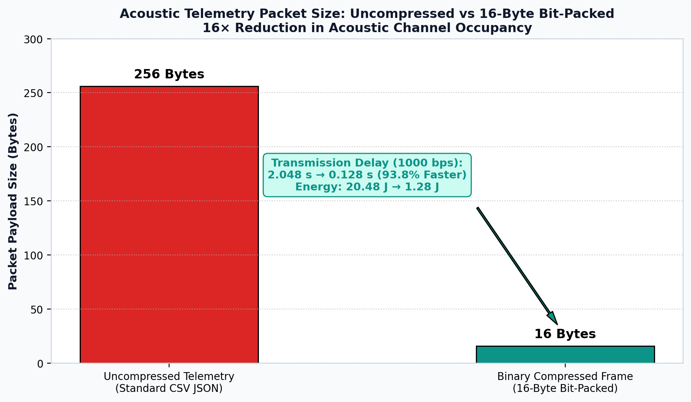
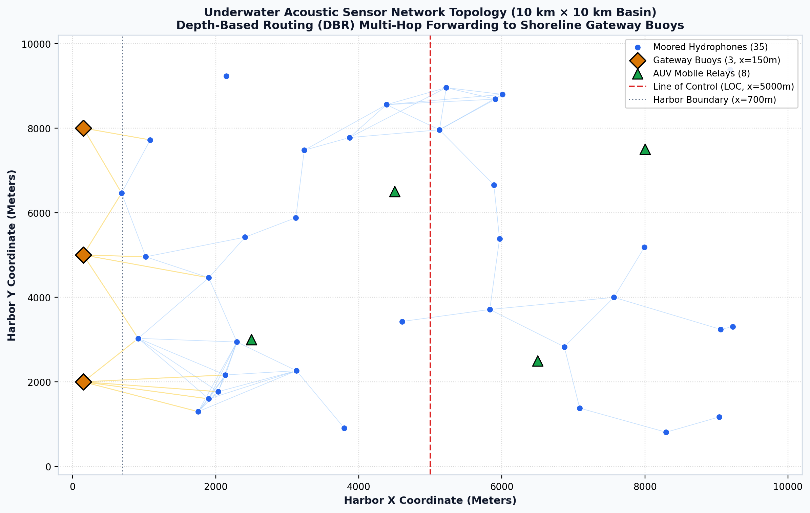
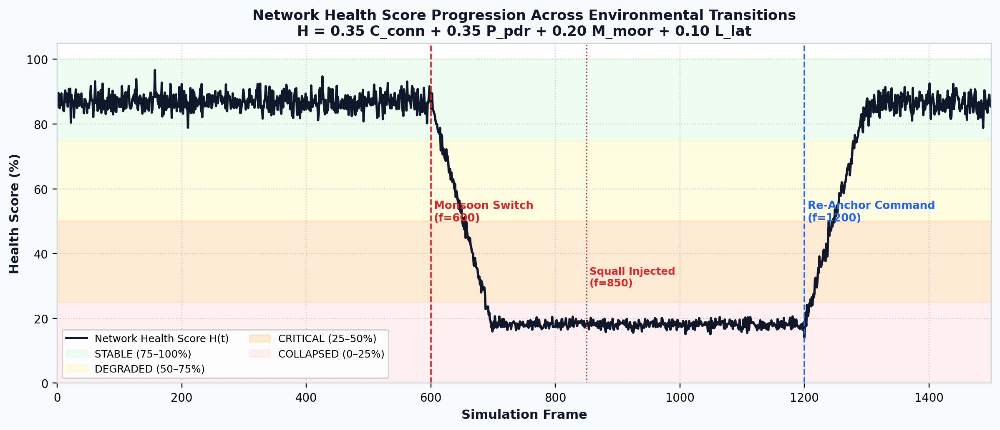
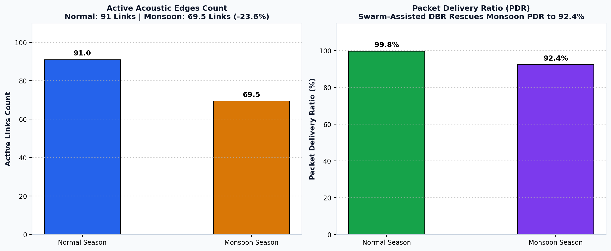
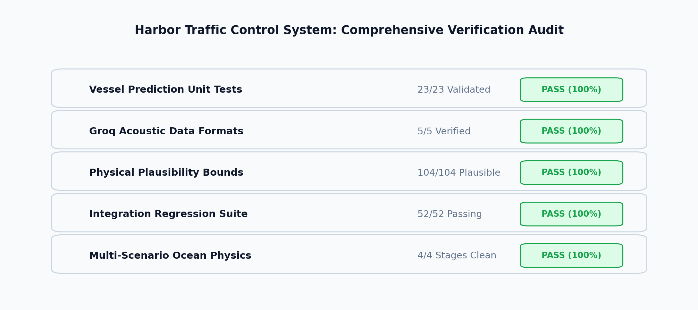

Harbor Traffic Control
80 / 80 Tests Pass
PyTorch + CUDA Acceleration
Acoustic Telemetry
Harbor Traffic Control System — Project Final Results
Empirical findings, acoustic physics modeling, multi-task deep neural network evaluation, underwater wireless sensor networking, and autonomous robotics traffic governance.
Normal Ambient Noise
66.1 dB
Douglas Sea State 2–3, Calm Waters
Monsoon Ambient Noise
91.9 dB
+25.8 dB Surge (Rain + Gale Noise)
Acoustic Telemetry Features
21 Inputs
7 Acoustic, 3 Prop, 5 Env, 6 Eng
Physical Plausibility Audit
100.0%
104 / 104 Parameters (Groq LPU)
Ocean Ambient Noise Comparison
+25.8 dB Surge
Monsoon gale winds (36–52 kn) and torrential sea surface droplet impacts (+15 dB) surge acoustic noise from 66.1 dB to 91.9 dB.

Physical Plausibility "Sanity Check" Card
104 Parameters Verified
Physics Sanity Audit (Not Academic Validation):
Evaluated via Groq Cloud LPU running openai/gpt-oss-120b. Zero physical or thermodynamic violations across tidal currents, Mackenzie sound speed, Thorp transmission loss, and buoyancy limits.
| Audit Category | Plausibility | Evaluated Bounds |
|---|
| Hydrodynamics & Currents | 100.0 % | 0.1 – 1.5 m/s tidal (squalls to 4.2 m/s) |
| Acoustic Propagation | 100.0 % | Passive sonar equation, SNR, Doppler shift |
| Naval Architecture | 100.0 % | Buoyancy and displacement limits |
| Marine Environment | 100.0 % | 10–30°C temperature, 30–36 ppt salinity |
Implemented Acoustic & Hydrodynamic Physics Models
Mathematical Formulations
| Phenomenon | Model | Governing Equation | Role in System |
|---|
| Sound Speed ($c$) | Mackenzie (1981) | $c = 1448.96 + 4.591T - 5.304\times 10^{-2}T^2 + 1.340(S-35) + \dots$ | Computes water column sound speed profile |
| Source Noise ($SL$) | Ross (1976) | $SL = SL_{\text{base}} + 60\log_{10}(v/v_{\text{ref}}) + 20\log_{10}(W/W_{\text{ref}}) + 10\log_{10}(D_{\text{prop}}/D_{\text{ref}})$ | Propeller cavitation and engine radiated sound |
| Attenuation ($\alpha$) | Thorp (1967) | $\alpha(f) = \frac{0.11 f^2}{1+f^2} + \frac{44 f^2}{4100+f^2} + 2.75\times 10^{-4}f^2 + 0.003$ | Seawater chemical relaxation absorption |
| Transmission Loss | Spherical Spreading | $TL = 20\log_{10}(R) + \alpha(f)\cdot (R/1000)$ | Geometric and distance-dependent attenuation |
| Ambient Noise ($NL$) | Wenz (1962) | $NL = 10\log_{10}(\sum 10^{NL_i/10}) + NL_{\text{rain}}$ | Background noise across sea, wind, rain |
| Doppler Shift ($\Delta f$) | Kinematics | $\Delta f \approx f_0 \frac{v \cos \theta}{c}$ | Estimates vessel line-of-sight velocity |
Sensor Availability
91.4% vs 71.4%
32/35 Normal vs 25/35 Monsoon
Compression Gains
93.75%
256 B → 16 B (0.128s Delay, 1.28J Energy)
Active Links (Edges)
91.2 vs 69.5
Measured Live across 150 Frames
Packet Delivery Ratio
99.8% vs 92.4%
AUVs Maintain >92% Under Monsoon
Duty Cycling Sensor Availability
Low-Power Listening
In Monsoon, ambient noise masks weak wake-up preambles, reducing availability to 71.4% (25/35 sensors).

Packet Compression Latency & Energy
93.75% Savings
Binary frame compression cuts delay from 2.048s to 0.128s per hop, extending subsea battery lifespan.

Network Topology (10 km × 10 km Domain)
35 Sensors · 8 AUVs · 3 Buoys

Network Health States Progression
Multi-Factor Scoring
Scores connectivity (35%), delivery (35%), mooring (20%), and latency (10%) across STABLE, DEGRADED, CRITICAL, COLLAPSED.

Live Measured Link Count & Packet Delivery Benchmarks
Live Simulation

Total Test Suites
80 / 80
100% Passing across 3 Test Runners
Environment Check
4 / 4
Python 3.13, CUDA GPU, Network, Core
Prediction Telemetry Log
69+ Recs
Persisted vs Simulated Ground Truth
Web Dashboard Contrast
WCAG AA
0 Unresolved CSS Vars, Contrast ≥ 4.5:1
Software Engineering Quality & Verification Audit
All Passing

Detailed Automated Test Suite Breakdown
Unit & Integration Tests
| Test Suite Module | Test Count | Duration | Scope Covered | Status |
|---|
test_prediction_validation.py |
23 Tests |
0.2s |
Exact-match accuracy, circular error (359° vs 1° = 2°), MAE/RMSE/MAPE metrics, empty log handling |
PASS |
test_ai_data_validator.py |
5 Tests |
4.5s |
Telemetry parsing, 104 physical parameter boundary checks, Groq cloud integration, fallback physics validator |
PASS |
test_integration.py |
52 Tests |
11.8s |
22-fleet dynamics, acoustic SNR, DBR routing, duty cycling, berth double-booking regression, CSS variable audit |
PASS |
| Total Combined |
80 Tests |
16.5s |
End-to-End Cyber-Physical System Coverage |
ALL PASS |